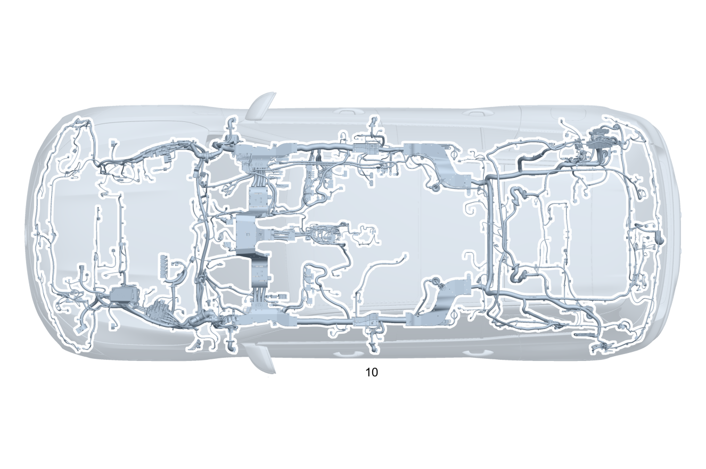

| № | Артикул | Название | Кол. | Примечание | Ограничение |
|---|---|---|---|---|---|
| 10 | A 167 540 25 39 | Электрический жгут (ELEKTRISCHER LEITUNGSSATZ) | 1 | ОСНОВ.ЖГУТ ЭЛЕКТРОПРОВ.НЕСУЩ.ОСНОВ.КУЗ. [-] При заказе указать идент. номер [-] В жгуте проводов предусмотрена возможность подключения соответствующих дополнительных опций согласно производственному номеру а/м | |
| 15 | Q 000000000002 | - Возможен заказ только отдельных компонентов жгута проводов | 1 | ESP® Рулевое управление: Влево | |
| 15 | Q 000000000002 | - Возможен заказ только отдельных компонентов жгута проводов | 1 | ESP® Рулевое управление: Вправо | |
| 15 | Q 000000000002 | - Возможен заказ только отдельных компонентов жгута проводов | 1 | ESP® 48V Рулевое управление: Влево | 93B/94B |
| 15 | Q 000000000002 | - Возможен заказ только отдельных компонентов жгута проводов | 1 | ESP® 48V Рулевое управление: Вправо | 93B/94B |
| 15 | Q 000000000002 | - Возможен заказ только отдельных компонентов жгута проводов | 1 | Система контроля давления в шинах | (807/808/29X)+475 |
| 15 | Q 000000000002 | - Возможен заказ только отдельных компонентов жгута проводов | 1 | Система контроля давления в шинах | 475 |
| 15 | Q 000000000002 | - Возможен заказ только отдельных компонентов жгута проводов | 1 | Шина данных CAN периферийного оборудования | 807/808/29X |
| 15 | Q 000000000002 | - Возможен заказ только отдельных компонентов жгута проводов | 1 | Шина данных CAN периферийного оборудования | |
| 15 | Q 000000000002 | - Возможен заказ только отдельных компонентов жгута проводов | 1 | Подушка безопасности | (807/808/29X)+(M254/M256/M656/M177+M036/M177+M013) |
| 15 | Q 000000000002 | - Возможен заказ только отдельных компонентов жгута проводов | 1 | Боковая подушка безопасности (задняя) | (807/808/29X)+293 |
| 15 | Q 000000000002 | - Возможен заказ только отдельных компонентов жгута проводов | 1 | Боковая подушка безопасности (задняя) | (807/808/29X)+293+(226/567) |
| 15 | Q 000000000002 | - Возможен заказ только отдельных компонентов жгута проводов | 1 | Аварийный натяжитель ремня безопасности 2\-го ряда сидений | U01 |
| 15 | Q 000000000002 | - Возможен заказ только отдельных компонентов жгута проводов | 1 | Аварийный натяжитель ремня безопасности 2\-го ряда сидений | U01+567 |
| 15 | Q 000000000002 | - Возможен заказ только отдельных компонентов жгута проводов | 1 | Аварийный натяжитель ремня безопасности 2\-го ряда сидений | (807/808/29X)+U01 |
| 15 | Q 000000000002 | - Возможен заказ только отдельных компонентов жгута проводов | 1 | Аварийный натяжитель ремня безопасности 2\-го ряда сидений | (807/808/29X)+U01+567 |
| 15 | Q 000000000002 | - Возможен заказ только отдельных компонентов жгута проводов | 1 | Аварийный натяжитель ремня безопасности 2\-го ряда сидений | (807/808/29X)+U23 |
| 15 | Q 000000000002 | - Возможен заказ только отдельных компонентов жгута проводов | 1 | Аварийный натяжитель ремня безопасности 2\-го ряда сидений | (807/808/29X)+U23+567 |
| 15 | Q 000000000002 | - Возможен заказ только отдельных компонентов жгута проводов | 1 | Замок ремня безопасности, третий ряд сидений | U01+847 |
| 15 | Q 000000000002 | - Возможен заказ только отдельных компонентов жгута проводов | 1 | Аварийный натяжитель ремня безопасности, третий ряд сидений | (807/808/29X)+U01+847 |
| 15 | Q 000000000002 | - Возможен заказ только отдельных компонентов жгута проводов | 1 | Аварийный натяжитель ремня безопасности, третий ряд сидений | (807/808/29X)+U23+847 |
| 15 | Q 000000000002 | - Возможен заказ только отдельных компонентов жгута проводов | 1 | Система распознавания занятости сиденья Рулевое управление: Влево | |
| 15 | Q 000000000002 | - Возможен заказ только отдельных компонентов жгута проводов | 1 | Система распознавания занятости сиденья Рулевое управление: Влево | U10 |
| 15 | Q 000000000002 | - Возможен заказ только отдельных компонентов жгута проводов | 1 | Система распознавания занятости сиденья Рулевое управление: Вправо | |
| 15 | Q 000000000002 | - Возможен заказ только отдельных компонентов жгута проводов | 1 | Система распознавания занятости сиденья Рулевое управление: Вправо | U10 |
| 15 | Q 000000000002 | - Возможен заказ только отдельных компонентов жгута проводов | 1 | Датчик веса Рулевое управление: Влево | U10 |
| 15 | Q 000000000002 | - Возможен заказ только отдельных компонентов жгута проводов | 1 | Датчик веса Рулевое управление: Вправо | U10 |
| 15 | Q 000000000002 | - Возможен заказ только отдельных компонентов жгута проводов | 1 | Датчик веса Рулевое управление: Влево | U10+362 |
| 15 | Q 000000000002 | - Возможен заказ только отдельных компонентов жгута проводов | 1 | Датчик веса Рулевое управление: Вправо | U10+362 |
| 15 | Q 000000000002 | - Возможен заказ только отдельных компонентов жгута проводов | 1 | Шина данных CAN системы ESP® Рулевое управление: Влево | |
| 15 | Q 000000000002 | - Возможен заказ только отдельных компонентов жгута проводов | 1 | Шина данных CAN системы ESP® Рулевое управление: Вправо | |
| 15 | Q 000000000002 | - Возможен заказ только отдельных компонентов жгута проводов | 1 | Шина данных CAN системы ESP® Рулевое управление: Влево | (490/465/M256+M016) |
| 15 | Q 000000000002 | - Возможен заказ только отдельных компонентов жгута проводов | 1 | Шина данных CAN системы ESP® Рулевое управление: Вправо | (490/465/M256+M016) |
| 15 | Q 000000000002 | - Возможен заказ только отдельных компонентов жгута проводов | 1 | Аварийный натяжитель ремня безопасности 3\-го ряда сидений | (807/808/29X)+847 |
| 15 | Q 000000000002 | - Возможен заказ только отдельных компонентов жгута проводов | 1 | Аварийный натяжитель ремня безопасности 3\-го ряда сидений | (807/808/29X)+847+(460/494) |
| 15 | Q 000000000002 | - Возможен заказ только отдельных компонентов жгута проводов | 1 | Interior seat belt tensioner LFT2 | (460/494) |
| 15 | Q 000000000002 | - Возможен заказ только отдельных компонентов жгута проводов | 1 | Модуль обработки сигналов и управления Рулевое управление: Влево | 807+B19+847 |
| 15 | Q 000000000002 | - Возможен заказ только отдельных компонентов жгута проводов | 1 | Модуль обработки сигналов и управления Рулевое управление: Вправо | 807+B19+847 |
| 15 | Q 000000000002 | - Возможен заказ только отдельных компонентов жгута проводов | 1 | Переключатель опускания задней части кузова | (489+847) |
| 15 | Q 000000000002 | - Возможен заказ только отдельных компонентов жгута проводов | 1 | Переключатель опускания задней части кузова | 489 |
| 15 | Q 000000000002 | - Возможен заказ только отдельных компонентов жгута проводов | 1 | Переключатель опускания задней части кузова | (807/808/29X)+(489+847) |
| 15 | Q 000000000002 | - Возможен заказ только отдельных компонентов жгута проводов | 1 | Переключатель опускания задней части кузова Рулевое управление: Влево | (807/808/29X)+489 |
| 15 | Q 000000000002 | - Возможен заказ только отдельных компонентов жгута проводов | 1 | Переключатель опускания задней части кузова Рулевое управление: Вправо | (807/808/29X)+489 |
| 15 | Q 000000000002 | - Возможен заказ только отдельных компонентов жгута проводов | 1 | Система стабилизации поперечных кренов кузова Рулевое управление: Влево | (807/808/127)+490 |
| 15 | Q 000000000002 | - Возможен заказ только отдельных компонентов жгута проводов | 1 | Система стабилизации поперечных кренов кузова Рулевое управление: Влево | (807/808/29X)+490 |
| 15 | Q 000000000002 | - Возможен заказ только отдельных компонентов жгута проводов | 1 | Система стабилизации поперечных кренов кузова Рулевое управление: Вправо | (807/808/127)+490 |
| 15 | Q 000000000002 | - Возможен заказ только отдельных компонентов жгута проводов | 1 | Система стабилизации поперечных кренов кузова Рулевое управление: Вправо | (807/808/29X)+490 |
| 15 | Q 000000000002 | - Возможен заказ только отдельных компонентов жгута проводов | 1 | Система стабилизации поперечных кренов кузова | (807/808/127)+465 |
| 15 | Q 000000000002 | - Возможен заказ только отдельных компонентов жгута проводов | 1 | Система стабилизации поперечных кренов кузова | (807/808/29X)+465 |
| 15 | Q 000000000002 | - Возможен заказ только отдельных компонентов жгута проводов | 1 | Крепление газового упора | (807/808/127)+489 |
| 15 | Q 000000000002 | - Возможен заказ только отдельных компонентов жгута проводов | 1 | Крепление газового упора | (807/808/29X)+489 |
| 15 | Q 000000000002 | - Возможен заказ только отдельных компонентов жгута проводов | 1 | Кабельный канал | |
| 15 | Q 000000000002 | - Возможен заказ только отдельных компонентов жгута проводов | 1 | Кабельный канал | 847 |
| 15 | Q 000000000002 | - Возможен заказ только отдельных компонентов жгута проводов | 1 | Электрический провод блокировки дифференциала | (807/808/29X)+467 |
| 15 | Q 000000000002 | - Возможен заказ только отдельных компонентов жгута проводов | 1 | Газ | (U68/U79/811/6U7) |
| 15 | Q 000000000002 | - Возможен заказ только отдельных компонентов жгута проводов | 1 | Бортовая сеть 48 В: управление / электропитание | (807/808/29X)+B01 |
| 15 | Q 000000000002 | - Возможен заказ только отдельных компонентов жгута проводов | 1 | Блок предохранителей и реле 48V | |
| 15 | Q 000000000002 | - Возможен заказ только отдельных компонентов жгута проводов | 1 | Радиатор | |
| 15 | Q 000000000002 | - Возможен заказ только отдельных компонентов жгута проводов | 1 | Защитная решетка к радиатору, снизу | (807/808/29X)+2U1 |
| 15 | Q 000000000002 | - Возможен заказ только отдельных компонентов жгута проводов | 1 | Компрессор кондиционера \- холодильный бокс | (807+057/808/29X)+(580/581) |
| 15 | Q 000000000002 | - Возможен заказ только отдельных компонентов жгута проводов | 1 | Трубопровод AdBlue® | (807/808/29X)+925+M656+94B |
| 15 | Q 000000000002 | - Возможен заказ только отдельных компонентов жгута проводов | 1 | Трубопровод AdBlue® | 807+925+M656+94B |
| 15 | Q 000000000002 | - Возможен заказ только отдельных компонентов жгута проводов | 1 | Система выпуска ОГ дизельных а/м | (M654/M656)+971 |
| 15 | Q 000000000002 | - Возможен заказ только отдельных компонентов жгута проводов | 1 | Система противоугонной сигнализации (EDW) | (807/808/29X)+882 |
| 15 | Q 000000000002 | - Возможен заказ только отдельных компонентов жгута проводов | 1 | Система противоугонной сигнализации (EDW) | (6U8/6U9) |
| 15 | Q 000000000002 | - Возможен заказ только отдельных компонентов жгута проводов | 1 | Блок управления полностью интегрированной системы управления АКП | (807/808/29X)+M656+421 |
| 15 | Q 000000000002 | - Возможен заказ только отдельных компонентов жгута проводов | 1 | Полный привод | (807/808/29X)+(M254/M256/M656/M177) |
| 15 | Q 000000000002 | - Возможен заказ только отдельных компонентов жгута проводов | 1 | Акустическая система | (810/811) |
| 15 | Q 000000000002 | - Возможен заказ только отдельных компонентов жгута проводов | 1 | Шина данных CAN Рулевое управление: Влево | (6U8/6U9) |
| 15 | Q 000000000002 | - Возможен заказ только отдельных компонентов жгута проводов | 1 | Шина данных CAN Рулевое управление: Влево | 362+(6U8/6U9) |
| 15 | Q 000000000002 | - Возможен заказ только отдельных компонентов жгута проводов | 1 | Система "Hermes" | 362 |
| 15 | Q 000000000002 | - Возможен заказ только отдельных компонентов жгута проводов | 1 | Система "Hermes" | 810+362 |
| 15 | Q 000000000002 | - Возможен заказ только отдельных компонентов жгута проводов | 1 | Блок управления усилителя акустической системы | (807/808/29X)+810+(382/383) |
| 15 | Q 000000000002 | - Возможен заказ только отдельных компонентов жгута проводов | 1 | Блок управления усилителя акустической системы | (807/808/29X)+(382/383) |
| 15 | Q 000000000002 | - Возможен заказ только отдельных компонентов жгута проводов | 1 | Акустическая система | 810 |
| 15 | Q 000000000002 | - Возможен заказ только отдельных компонентов жгута проводов | 1 | Зарядное устройство телефона | (807/808/29X)+897 |
| 15 | Q 000000000002 | - Возможен заказ только отдельных компонентов жгута проводов | 1 | Зарядное устройство телефона Рулевое управление: Влево | (807/808/29X)+897+2K0 |
| 15 | Q 000000000002 | - Возможен заказ только отдельных компонентов жгута проводов | 1 | USB\-разъем модуля подключения мультимедийных устройств посередине в центральной консоли в задней части салона | (807/808/29X)+72B |
| 15 | Q 000000000002 | - Возможен заказ только отдельных компонентов жгута проводов | 1 | USB\-разъем модуля подключения мультимедийных устройств посередине в центральной консоли в задней части салона | (807/808/29X)+72B+847 |
| 15 | Q 000000000002 | - Возможен заказ только отдельных компонентов жгута проводов | 1 | USB\-разъем модуля подключения мультимедийных устройств посередине в центральной консоли в задней части салона | (807/808/29X)+72B+U82 |
| 15 | Q 000000000002 | - Возможен заказ только отдельных компонентов жгута проводов | 1 | USB\-разъем модуля подключения мультимедийных устройств посередине в центральной консоли в задней части салона | (807/808/29X)+72B+847+U82 |
| 15 | Q 000000000002 | - Возможен заказ только отдельных компонентов жгута проводов | 1 | USB\-разъем модуля подключения мультимедийных устройств посередине в центральной консоли в задней части салона | (807/808/29X)+395+72B+U82 |
| 15 | Q 000000000002 | - Возможен заказ только отдельных компонентов жгута проводов | 1 | USB\-разъем модуля подключения мультимедийных устройств посередине в центральной консоли в задней части салона | (807/808/29X)+395+72B+847+U82 |
| 15 | Q 000000000002 | - Возможен заказ только отдельных компонентов жгута проводов | 1 | Мультимедийная система для задних пассажиров | (807/808/29X)+735 |
| 15 | Q 000000000002 | - Возможен заказ только отдельных компонентов жгута проводов | 1 | Сиденье повышенной комфортности | P08 |
| 15 | Q 000000000002 | - Возможен заказ только отдельных компонентов жгута проводов | 1 | Системы комфорта | (807/808/29X)+395 |
| 15 | Q 000000000002 | - Возможен заказ только отдельных компонентов жгута проводов | 1 | Шина данных CAN | |
| 15 | Q 000000000002 | - Возможен заказ только отдельных компонентов жгута проводов | 1 | KEYLESS Entry Рулевое управление: Влево | (807/808/29X)+896 |
| 15 | Q 000000000002 | - Возможен заказ только отдельных компонентов жгута проводов | 1 | KEYLESS Entry Рулевое управление: Вправо | (807/808/29X)+896 |
| 15 | Q 000000000002 | - Возможен заказ только отдельных компонентов жгута проводов | 1 | Камера сзади | 218/501 |
| 15 | Q 000000000002 | - Возможен заказ только отдельных компонентов жгута проводов | 1 | Мультифункциональная камера | 233+(243/608/628/513/504) |
| 15 | Q 000000000002 | - Возможен заказ только отдельных компонентов жгута проводов | 1 | Система "Distronic" / система предупреждения о столкновении | (239/258) |
| 15 | Q 000000000002 | - Возможен заказ только отдельных компонентов жгута проводов | 1 | Задний радарный датчик | 234 |
| 15 | Q 000000000002 | - Возможен заказ только отдельных компонентов жгута проводов | 1 | Подсвеченная звезда на облицовке радиатора | (807/808/29X)+24U |
| 15 | Q 000000000002 | - Возможен заказ только отдельных компонентов жгута проводов | 1 | Задний фонарь | (632/640/642)+830 |
| 15 | Q 000000000002 | - Возможен заказ только отдельных компонентов жгута проводов | 1 | Задний фонарь | (632/640/642) |
| 15 | Q 000000000002 | - Возможен заказ только отдельных компонентов жгута проводов | 1 | Задний фонарь | (631/641) |
| 15 | Q 000000000002 | - Возможен заказ только отдельных компонентов жгута проводов | 1 | Фара слева; правостороннее движение | (807/808/29X)+(316/318) |
| 15 | Q 000000000002 | - Возможен заказ только отдельных компонентов жгута проводов | 1 | Фара справа; левостороннее движение | (807/808/29X)+317 |
| 15 | Q 000000000002 | - Возможен заказ только отдельных компонентов жгута проводов | 1 | Блок управления регулировки сиденья водителя Рулевое управление: Влево | 807 |
| 15 | Q 000000000002 | - Возможен заказ только отдельных компонентов жгута проводов | 1 | Блок управления регулировки сиденья водителя Рулевое управление: Влево | 807+057/808/29X |
| 15 | Q 000000000002 | - Возможен заказ только отдельных компонентов жгута проводов | 1 | Блок управления регулировки сиденья водителя Рулевое управление: Вправо | 807 |
| 15 | Q 000000000002 | - Возможен заказ только отдельных компонентов жгута проводов | 1 | Регулировка поясничного подпора Рулевое управление: Влево | 399/U22 |
| 15 | Q 000000000002 | - Возможен заказ только отдельных компонентов жгута проводов | 1 | Регулировка поясничного подпора Рулевое управление: Вправо | 399/U22 |
| 15 | Q 000000000002 | - Возможен заказ только отдельных компонентов жгута проводов | 1 | Подогрев передних сидений Рулевое управление: Влево | 902 |
| 15 | Q 000000000002 | - Возможен заказ только отдельных компонентов жгута проводов | 1 | Подогрев передних сидений Рулевое управление: Вправо | 902 |
| 15 | Q 000000000002 | - Возможен заказ только отдельных компонентов жгута проводов | 1 | Блок управления передним сиденьем Рулевое управление: Влево | (807/808/29X)+902 |
| 15 | Q 000000000002 | - Возможен заказ только отдельных компонентов жгута проводов | 1 | Блок управления передним сиденьем Рулевое управление: Вправо | (807/808/29X)+902 |
| 15 | Q 000000000002 | - Возможен заказ только отдельных компонентов жгута проводов | 1 | Подогрев задних сидений | 872 |
| 15 | Q 000000000002 | - Возможен заказ только отдельных компонентов жгута проводов | 1 | Подогрев задних сидений | 872+567 |
| 15 | Q 000000000002 | - Возможен заказ только отдельных компонентов жгута проводов | 1 | Блок управления подогрева сидений сзади | (807/808/29X)+872 |
| 15 | Q 000000000002 | - Возможен заказ только отдельных компонентов жгута проводов | 1 | Механизм регулировки заднего сиденья электрический | 567 |
| 15 | Q 000000000002 | - Возможен заказ только отдельных компонентов жгута проводов | 1 | Блок управления сиденья сзади, синий цвет | (807/808/29X)+567 |
| 15 | Q 000000000002 | - Возможен заказ только отдельных компонентов жгута проводов | 1 | Блок выключателей | 567 |
| 15 | Q 000000000002 | - Возможен заказ только отдельных компонентов жгута проводов | 1 | Блок выключателей | 567+847 |
| 15 | Q 000000000002 | - Возможен заказ только отдельных компонентов жгута проводов | 1 | Блок выключателей | 567+847+489 |
| 15 | Q 000000000002 | - Возможен заказ только отдельных компонентов жгута проводов | 1 | Выключатель регулировки положения сиденья | (807/808/29X)+567 |
| 15 | Q 000000000002 | - Возможен заказ только отдельных компонентов жгута проводов | 1 | Выключатель регулировки положения сиденья | (807/808/29X)+567+847 |
| 15 | Q 000000000002 | - Возможен заказ только отдельных компонентов жгута проводов | 1 | Выключатель регулировки положения сиденья | (807/808/29X)+567+489 |
| 15 | Q 000000000002 | - Возможен заказ только отдельных компонентов жгута проводов | 1 | Выключатель регулировки положения сиденья | (807/808/29X)+567+489+847 |
| 15 | Q 000000000002 | - Возможен заказ только отдельных компонентов жгута проводов | 1 | Антенна KEYLESS\-GO (в центральной консоли) | |
| 15 | Q 000000000002 | - Возможен заказ только отдельных компонентов жгута проводов | 1 | Антенна KEYLESS\-GO (в центральной консоли) | 94B |
| 15 | Q 000000000002 | - Возможен заказ только отдельных компонентов жгута проводов | 1 | Функция пуска двигателя системы "Keyless\-Go" Рулевое управление: Влево | 889 |
| 15 | Q 000000000002 | - Возможен заказ только отдельных компонентов жгута проводов | 1 | Функция пуска двигателя системы "Keyless\-Go" Рулевое управление: Вправо | 889 |
| 15 | Q 000000000002 | - Возможен заказ только отдельных компонентов жгута проводов | 2 | Адаптерный кабель KEYLESS\-GO | (807/808/29X)+889 |
| 15 | Q 000000000002 | - Возможен заказ только отдельных компонентов жгута проводов | 1 | Антенна KEYLESS\-GO в багажнике | 871 |
| 15 | Q 000000000002 | - Возможен заказ только отдельных компонентов жгута проводов | 1 | Дистанционное закрывание крышки багажника | 871 |
| 15 | Q 000000000002 | - Возможен заказ только отдельных компонентов жгута проводов | 1 | Распашная дверь багажного отделения с автоматическим приводом | 890 |
| 15 | Q 000000000002 | - Возможен заказ только отдельных компонентов жгута проводов | 1 | Кнопочный выключатель KEYLESS\-GO, крышка багажника | (807/808/29X)+890 |
| 15 | Q 000000000002 | - Возможен заказ только отдельных компонентов жгута проводов | 1 | Электродвигатель панорамной крыши со сдвижным люком Рулевое управление: Влево | (807/808/29X)+413 |
| 15 | Q 000000000002 | - Возможен заказ только отдельных компонентов жгута проводов | 1 | Электродвигатель панорамной крыши со сдвижным люком Рулевое управление: Вправо | (807/808/29X)+413 |
| 15 | Q 000000000002 | - Возможен заказ только отдельных компонентов жгута проводов | 1 | Электронный замок зажигания | |
| 15 | Q 000000000002 | - Возможен заказ только отдельных компонентов жгута проводов | 1 | Штекерное соединение: система зажигания | |
| 15 | Q 000000000002 | - Возможен заказ только отдельных компонентов жгута проводов | 1 | Штекерное соединение: система зажигания | 889/M177/M256+M016 |
| 15 | Q 000000000002 | - Возможен заказ только отдельных компонентов жгута проводов | 1 | Блок управления электронного замка зажигания (EZS) | 807/808/29X |
| 15 | Q 000000000002 | - Возможен заказ только отдельных компонентов жгута проводов | 1 | "Flexray" VAR 1 Рулевое управление: Влево | 807/808/29X |
| 15 | Q 000000000002 | - Возможен заказ только отдельных компонентов жгута проводов | 1 | "Flexray" VAR 1 Рулевое управление: Вправо | 807/808/29X |
| 15 | Q 000000000002 | - Возможен заказ только отдельных компонентов жгута проводов | 1 | "Flexray" VAR 2 Рулевое управление: Влево | 807/808/29X |
| 15 | Q 000000000002 | - Возможен заказ только отдельных компонентов жгута проводов | 1 | "Flexray" VAR 2 Рулевое управление: Вправо | 807/808/29X |
| 15 | Q 000000000002 | - Возможен заказ только отдельных компонентов жгута проводов | 1 | Шина данных CAN блока управления привода (соединитель провода) | (807/808/29X)+M656 |
| 15 | Q 000000000002 | - Возможен заказ только отдельных компонентов жгута проводов | 1 | Автономный отопитель | (807/808/29X)+228 |
| 15 | Q 000000000002 | - Возможен заказ только отдельных компонентов жгута проводов | 1 | Связь по шине данных LIN с климатической системой | (807/808/29X)+(228/581/ME10/M656+94B) |
| 15 | Q 000000000002 | - Возможен заказ только отдельных компонентов жгута проводов | 1 | Связь по шине данных LIN Рулевое управление: Влево | (807/808/29X)+580 |
| 15 | Q 000000000002 | - Возможен заказ только отдельных компонентов жгута проводов | 1 | Связь по шине данных LIN Рулевое управление: Влево | 807+581 |
| 15 | Q 000000000002 | - Возможен заказ только отдельных компонентов жгута проводов | 1 | Связь по шине данных LIN Рулевое управление: Влево | (807+057/808/29X)+581 |
| 15 | Q 000000000002 | - Возможен заказ только отдельных компонентов жгута проводов | 1 | Связь по шине данных LIN Рулевое управление: Вправо | (807/808/29X)+580 |
| 15 | Q 000000000002 | - Возможен заказ только отдельных компонентов жгута проводов | 1 | Связь по шине данных LIN Рулевое управление: Вправо | 807+581 |
| 15 | Q 000000000002 | - Возможен заказ только отдельных компонентов жгута проводов | 1 | Электрический дополнительный отопитель высоковольтной системы Рулевое управление: Влево | 807+M656+94B |
| 15 | Q 000000000002 | - Возможен заказ только отдельных компонентов жгута проводов | 1 | Электрический дополнительный отопитель высоковольтной системы Рулевое управление: Вправо | 807+M656+94B |
| 15 | Q 000000000002 | - Возможен заказ только отдельных компонентов жгута проводов | 1 | Связь LIN, нагревательное устройство | 581 |
| 15 | Q 000000000002 | - Возможен заказ только отдельных компонентов жгута проводов | 1 | Связь LIN, нагревательное устройство | 581+P08 |
| 15 | Q 000000000002 | - Возможен заказ только отдельных компонентов жгута проводов | 1 | Связь LIN, нагревательное устройство | B24 |
| 15 | Q 000000000002 | - Возможен заказ только отдельных компонентов жгута проводов | 1 | Связь LIN, нагревательное устройство | 581+B24 |
| 15 | Q 000000000002 | - Возможен заказ только отдельных компонентов жгута проводов | 1 | Связь LIN, нагревательное устройство | 581+B24+P08 |
| 15 | Q 000000000002 | - Возможен заказ только отдельных компонентов жгута проводов | 1 | Система управления отопителем | 581 |
| 15 | Q 000000000002 | - Возможен заказ только отдельных компонентов жгута проводов | 1 | Кондиционер, задняя часть салона Рулевое управление: Влево | (807/808/29X)+581 |
| 15 | Q 000000000002 | - Возможен заказ только отдельных компонентов жгута проводов | 1 | Кондиционер, задняя часть салона Рулевое управление: Вправо | (807/808/29X)+581 |
| 15 | Q 000000000002 | - Возможен заказ только отдельных компонентов жгута проводов | 1 | Подогрев сидений | 872 |
| 15 | Q 000000000002 | - Возможен заказ только отдельных компонентов жгута проводов | 1 | Подогрев сидений | 906 |
| 15 | Q 000000000002 | - Возможен заказ только отдельных компонентов жгута проводов | 1 | Подогрев сидений | 872+906 |
| 15 | Q 000000000002 | - Возможен заказ только отдельных компонентов жгута проводов | 1 | Связь по шине данных LIN с климатической системой Рулевое управление: Влево | 807+228 |
| 15 | Q 000000000002 | - Возможен заказ только отдельных компонентов жгута проводов | 1 | Связь по шине данных LIN с климатической системой | (807/808/29X)+M656+94B |
| 15 | Q 000000000002 | - Возможен заказ только отдельных компонентов жгута проводов | 1 | Подстаканник [402] БОЛЬШЕ НЕ ПОСТАВЛЯЕТСЯ | 311 |
| 15 | Q 000000000002 | - Возможен заказ только отдельных компонентов жгута проводов | 1 | Источники света \- плафон освещения багажника / грузового отделения | 847/489 |
| 15 | Q 000000000002 | - Возможен заказ только отдельных компонентов жгута проводов | 1 | Подогрев подлокотников | 906 |
| 15 | Q 000000000002 | - Возможен заказ только отдельных компонентов жгута проводов | 1 | Подогрев подлокотников | (807/808/29X)+906 |
| 15 | Q 000000000002 | - Возможен заказ только отдельных компонентов жгута проводов | 1 | Подогрев подлокотников N32/1*1 Рулевое управление: Влево | (807/808/29X)+906 |
| 15 | Q 000000000002 | - Возможен заказ только отдельных компонентов жгута проводов | 1 | Подогрев подлокотников N32/1*1 Рулевое управление: Вправо | (807/808/29X)+906 |
| 15 | Q 000000000002 | - Возможен заказ только отдельных компонентов жгута проводов | 1 | Центральная консоль | 72B+P08 |
| 15 | Q 000000000002 | - Возможен заказ только отдельных компонентов жгута проводов | 1 | Розетка 12 В, для центральной консоли | 807/808/29X |
| 15 | Q 000000000002 | - Возможен заказ только отдельных компонентов жгута проводов | 1 | Подсветка подножки | (807/808/29X)+846 |
| 15 | Q 000000000002 | - Возможен заказ только отдельных компонентов жгута проводов | 1 | Освещение | 876 |
| 15 | Q 000000000002 | - Возможен заказ только отдельных компонентов жгута проводов | 1 | Освещение | |
| 15 | Q 000000000002 | - Возможен заказ только отдельных компонентов жгута проводов | 1 | Электрооборудование/освещение Рулевое управление: Влево | 807/808/29X |
| 15 | Q 000000000002 | - Возможен заказ только отдельных компонентов жгута проводов | 1 | Электрооборудование/освещение Рулевое управление: Влево | (807/808/29X)+395 |
| 15 | Q 000000000002 | - Возможен заказ только отдельных компонентов жгута проводов | 1 | Электрооборудование/освещение Рулевое управление: Вправо | 807/808/29X |
| 15 | Q 000000000002 | - Возможен заказ только отдельных компонентов жгута проводов | 1 | Освещение | P08 |
| 15 | Q 000000000002 | - Возможен заказ только отдельных компонентов жгута проводов | 1 | Светодиодная подсветка салона [402] БОЛЬШЕ НЕ ПОСТАВЛЯЕТСЯ | |
| 15 | Q 000000000002 | - Возможен заказ только отдельных компонентов жгута проводов | 1 | Светодиодная подсветка салона Рулевое управление: Влево | 876 |
| 15 | Q 000000000002 | - Возможен заказ только отдельных компонентов жгута проводов | 1 | Светодиодная подсветка салона Рулевое управление: Вправо | 876 |
| 15 | Q 000000000002 | - Возможен заказ только отдельных компонентов жгута проводов | 1 | Светодиодная подсветка салона Рулевое управление: Влево | 876+(307/P08) |
| 15 | Q 000000000002 | - Возможен заказ только отдельных компонентов жгута проводов | 1 | Светодиодная подсветка салона Рулевое управление: Вправо | 876+(307/P08) |
| 15 | Q 000000000002 | - Возможен заказ только отдельных компонентов жгута проводов | 1 | Потолочная блок\-панель управления Рулевое управление: Вправо | (807/808/29X)+876 |
| 15 | Q 000000000002 | - Возможен заказ только отдельных компонентов жгута проводов | 1 | Светодиодная подсветка салона | 876 |
| 15 | Q 000000000002 | - Возможен заказ только отдельных компонентов жгута проводов | 1 | Светодиодная подсветка салона | 876+735 |
| 15 | Q 000000000002 | - Возможен заказ только отдельных компонентов жгута проводов | 1 | Связь LIN, светильник эстетической подсветки | ((P08/224/854)+876)/M036 |
| 15 | Q 000000000002 | - Возможен заказ только отдельных компонентов жгута проводов | 1 | Светодиодная подсветка салона | 876 |
| 15 | Q 000000000002 | - Возможен заказ только отдельных компонентов жгута проводов | 1 | Светодиодная подсветка салона | 876+811 |
| 15 | Q 000000000002 | - Возможен заказ только отдельных компонентов жгута проводов | 1 | Бортовая сеть 48 В: управление / электропитание | (807/808/29X)+B01 |
| 15 | Q 000000000002 | - Возможен заказ только отдельных компонентов жгута проводов | 1 | Бортовая сеть 48 В: управление / электропитание | (807/808/29X)+B01 |
| 15 | Q 000000000002 | - Возможен заказ только отдельных компонентов жгута проводов | 1 | Жгут электропроводки топливного бака | (807/808/29X)+M656 |
| 20 | A 167 540 30 60 | - Электрический жгут (ELEKTRISCHER LEITUNGSSATZ) | 1 | ESP®, базовый объем Рулевое управление: Влево | |
| 20 | A 167 540 31 60 | - Электрический жгут | 1 | ESP®, базовый объем Рулевое управление: Вправо | |
| 20 | A 167 440 37 07 | - Электрический жгут (ELEKTRISCHER LEITUNGSSATZ) | 1 | ESP®, базовый объем Рулевое управление: Влево | 807/808/29X |
| 20 | A 167 440 37 07 | - Электрический жгут (ELEKTRISCHER LEITUNGSSATZ) | 1 | ESP®, базовый объем Рулевое управление: Влево | |
| 20 | A 167 440 38 07 | - Электрический жгут (ELEKTRISCHER LEITUNGSSATZ) | 1 | ESP®, базовый объем Рулевое управление: Вправо | 807/808/29X |
| 20 | A 167 440 38 07 | - Электрический жгут (ELEKTRISCHER LEITUNGSSATZ) | 1 | ESP®, базовый объем Рулевое управление: Вправо | |
| 25 | A 167 540 02 53 | - Электрический жгут (ELEKTRISCHER LEITUNGSSATZ) | 1 | Отопитель | 228 |
| 25 | Q 000000000002 | - Возможен заказ только отдельных компонентов жгута проводов | 1 | Связь LIN, нагревательное устройство | 228 |
| 25 | A 167 540 04 53 | - Электрический жгут (ELEKTRISCHER LEITUNGSSATZ) | 1 | Связь LIN, нагревательное устройство | 228+581 |
| 25 | A 167 540 04 53 | - Электрический жгут (ELEKTRISCHER LEITUNGSSATZ) | 1 | Связь LIN, нагревательное устройство | 228+(M654/M656/M654+581/M656+581)+94B |
| 30 | A 167 540 21 15 | - Электрический жгут (ELEKTRISCHER LEITUNGSSATZ) | 1 | Связь по шине данных LIN с климатической системой | 228 |
| 30 | A 167 540 24 36 | - Электрический жгут | 1 | Связь по шине данных LIN с климатической системой | (803+053/804)+228+(M654/M656)+94B |
| 30 | A 167 540 24 36 | - Электрический жгут | 1 | Связь по шине данных LIN с климатической системой | 228+(M654/M656)+94B |
| 30 | Q 000000000002 | - Возможен заказ только отдельных компонентов жгута проводов | 1 | Связь по шине данных LIN с климатической системой | (M654/M656)+94B |
| 40 | A 167 540 51 09 | - Электрический жгут (ELEKTRISCHER LEITUNGSSATZ) | 1 | Система контроля давления в шинах (RDK) | 475 |
| 40 | A 167 440 67 00 | - Электрический жгут (ELEKTRISCHER LEITUNGSSATZ) | 1 | Система контроля давления в шинах (RDK) | (807/808/29X)+475 |
| 40 | A 167 440 67 00 | - Электрический жгут (ELEKTRISCHER LEITUNGSSATZ) | 1 | Система контроля давления в шинах (RDK) | 475 |
| 55 | A 167 440 17 15 | - Электрический жгут | 1 | Короб кондиционера Рулевое управление: Влево | 807+(580/581) |
| 55 | A 167 440 58 23 | - Электрический жгут (ELEKTRISCHER LEITUNGSSATZ) | 1 | Короб кондиционера Рулевое управление: Вправо | 807+(580/581) |
| 60 | A 167 540 93 14 | - Электрический жгут (ELEKTRISCHER LEITUNGSSATZ) | 1 | Базовый объем подушки безопасности Рулевое управление: Влево | |
| 60 | A 167 540 72 15 | - Электрический жгут (ELEKTRISCHER LEITUNGSSATZ) | 1 | Базовый объем подушки безопасности Рулевое управление: Вправо | |
| 60 | A 167 540 27 10 | - Электрический жгут (ELEKTRISCHER LEITUNGSSATZ) | 1 | Базовый объем подушки безопасности Рулевое управление: Влево | 460/494 |
| 60 | A 167 440 77 19 | - Электрический жгут | 1 | Подушка безопасности Рулевое управление: Влево | 807 |
| 60 | A 167 440 78 19 | - Электрический жгут | 1 | Подушка безопасности Рулевое управление: Вправо | 807 |
| 60 | A 167 440 77 34 | - Электрический жгут | 1 | Подушка безопасности Рулевое управление: Вправо | 807+057/808/29X |
| 60 | A 167 440 77 34 | - Электрический жгут | 1 | Подушка безопасности Рулевое управление: Вправо | 807+057 |
| 60 | A 167 440 79 19 | - Электрический жгут (ELEKTRISCHER LEITUNGSSATZ) | 1 | Подушка безопасности Рулевое управление: Влево | 807+(460/494) |
| 60 | A 167 540 87 21 | - Электрический жгут (ELEKTRISCHER LEITUNGSSATZ) | 1 | Разъем подушки безопасности | M176/M254/M256/M654/M656/M177+M036 |
| 60 | A 167 540 28 10 | - Электрический жгут (ELEKTRISCHER LEITUNGSSATZ) | 1 | Боковая подушка безопасности (задняя) | 293 |
| 60 | A 167 540 29 10 | - Электрический жгут (ELEKTRISCHER LEITUNGSSATZ) | 1 | Боковая подушка безопасности (задняя) | 293+(226/567) |
| 70 | Q 000000000002 | - Возможен заказ только отдельных компонентов жгута проводов | 1 | Связь по шине данных LIN | 580+(M654/M656)+94B |
| 70 | A 167 540 27 36 | - Электрический жгут | 1 | Связь по шине данных LIN | (228/581/228+580)+(M654/M656)+94B |
| 75 | A 167 440 39 01 | - Электрический жгут (ELEKTRISCHER LEITUNGSSATZ) | 1 | Система "Keyless\-Go" | (807/808/29X)+94B |
| 80 | A 167 540 02 61 | - Электрический жгут (ELEKTRISCHER LEITUNGSSATZ) | 1 | Система адаптивной амортизации (ADS) | (215/490/465/M256+M016) |
| 80 | A 167 440 79 00 | - Электрический жгут (ELEKTRISCHER LEITUNGSSATZ) | 1 | Система адаптивной амортизации (ADS) | (807/808/29X)+(215/490/465/M256+M016) |
| 100 | A 167 540 50 60 | - Электрический жгут | 1 | Электрогидравлическая подвеска Рулевое управление: Влево | 490 |
| 100 | A 167 540 51 60 | - Электрический жгут | 1 | Электрогидравлическая подвеска Рулевое управление: Вправо | 490 |
| 110 | A 167 440 03 08 | - Электрический жгут (ELEKTRISCHER LEITUNGSSATZ) | 1 | Система "PRE\-SAVE" для боковых столкновений Рулевое управление: Влево | (807/808/29X)+292 |
| 110 | A 167 440 04 08 | - Электрический жгут (ELEKTRISCHER LEITUNGSSATZ) | 1 | Система "PRE\-SAVE" для боковых столкновений Рулевое управление: Вправо | (807/808/29X)+292 |
| 115 | A 167 440 73 00 | - Электрический жгут (ELEKTRISCHER LEITUNGSSATZ) | 1 | Датчик веса Рулевое управление: Влево | (807/808/29X)+U10 |
| 115 | A 167 440 98 07 | - Электрический жгут (ELEKTRISCHER LEITUNGSSATZ) | 1 | Датчик веса Рулевое управление: Вправо | (807/808/29X)+U10 |
| 120 | A 167 540 20 61 | - Электрический жгут | 1 | Система стабилизации поперечных кренов кузова | 465 |
| 125 | A 167 440 27 27 | - Электрический жгут (ELEKTRISCHER LEITUNGSSATZ) | 1 | Модуль предохранителей и реле сзади | (807/808/29X)+B19 |
| 140 | Q 000000000002 | - Возможен заказ только отдельных компонентов жгута проводов | 1 | Пневмобаллон подвески [402] БОЛЬШЕ НЕ ПОСТАВЛЯЕТСЯ | 489+215 |
| 140 | Q 000000000002 | - Возможен заказ только отдельных компонентов жгута проводов | 1 | Пневмобаллон подвески | 489+215+(233/239/258) |
| 140 | A 167 540 22 11 | - Электрический жгут (ELEKTRISCHER LEITUNGSSATZ) | 1 | Пневмобаллон подвески | 489+490 |
| 140 | A 167 540 23 11 | - Электрический жгут (ELEKTRISCHER LEITUNGSSATZ) | 1 | Пневмобаллон подвески | 489+490+(233/239/258) |
| 140 | A 167 440 37 08 | - Электрический жгут (ELEKTRISCHER LEITUNGSSATZ) | 1 | Пневмобаллон подвески | (807/808/29X)+489 |
| 140 | A 167 440 34 08 | - Электрический жгут (ELEKTRISCHER LEITUNGSSATZ) | 1 | Пневмобаллон подвески | (807/808/29X)+489+215 |
| 140 | A 167 440 35 08 | - Электрический жгут (ELEKTRISCHER LEITUNGSSATZ) | 1 | Пневмобаллон подвески | (807/808/29X)+489+490 |
| 150 | A 167 540 99 62 | - Электрический жгут (ELEKTRISCHER LEITUNGSSATZ) | 1 | Шина данных CAN головного устройства | |
| 150 | A 167 540 65 17 | - Электрический жгут (ELEKTRISCHER LEITUNGSSATZ) | 1 | Шина данных CAN головного устройства | (447/854/898/943) |
| 160 | A 167 540 44 56 | - Электрический жгут (ELEKTRISCHER LEITUNGSSATZ) | 1 | Салон, базовый объем Рулевое управление: Влево | |
| 160 | A 167 540 45 56 | - Электрический жгут | 1 | Салон, базовый объем Рулевое управление: Вправо | |
| 160 | A 167 440 57 27 | - Электрический жгут (ELEKTRISCHER LEITUNGSSATZ) | 1 | Салон, базовый объем Рулевое управление: Влево | 807 |
| 160 | A 167 440 27 35 | - Электрический жгут | 1 | Салон, базовый объем Рулевое управление: Влево | (807+057/808/29X) |
| 160 | A 167 440 27 35 | - Электрический жгут | 1 | Салон, базовый объем Рулевое управление: Влево | 807+057 |
| 160 | A 167 440 58 27 | - Электрический жгут | 1 | Салон, базовый объем Рулевое управление: Вправо | 807 |
| 160 | A 167 440 29 35 | - Электрический жгут | 1 | Салон, базовый объем Рулевое управление: Вправо | (807+057/808/29X) |
| 160 | A 167 440 29 35 | - Электрический жгут | 1 | Салон, базовый объем Рулевое управление: Вправо | 807+057 |
| 180 | A 167 540 04 68 | - Электрический жгут (ELEKTRISCHER LEITUNGSSATZ) | 1 | Салон, базовый объем | |
| 180 | A 167 440 99 29 | - Электрический жгут (ELEKTRISCHER LEITUNGSSATZ) | 1 | Салон, базовый объем Рулевое управление: Влево | 807/808/29X |
| 180 | A 167 440 99 29 | - Электрический жгут (ELEKTRISCHER LEITUNGSSATZ) | 1 | Салон, базовый объем Рулевое управление: Влево | 807 |
| 180 | A 167 440 05 30 | - Электрический жгут | 1 | Салон, базовый объем Рулевое управление: Вправо | 807/808/29X |
| 180 | A 167 440 05 30 | - Электрический жгут | 1 | Салон, базовый объем Рулевое управление: Вправо | 807 |
| 210 | A 167 440 35 01 | - Электрический жгут (ELEKTRISCHER LEITUNGSSATZ) | 1 | Электрорегулируемое сиденье водителя с поясничным подпором Рулевое управление: Влево | (807/808/29X)+(399/U22) |
| 210 | A 167 440 68 12 | - Электрический жгут (ELEKTRISCHER LEITUNGSSATZ) | 1 | Электрорегулируемое сиденье водителя с поясничным подпором Рулевое управление: Вправо | (807/808/29X)+(399/U22) |
| 215 | A 167 440 69 12 | - Электрический жгут (ELEKTRISCHER LEITUNGSSATZ) | 1 | Провод электропитания мультиконтурного сиденья с полным электроприводом регулировки положения / с массажной функцией Рулевое управление: Влево | (807/808/29X)+399 |
| 215 | A 167 440 70 12 | - Электрический жгут | 1 | Провод электропитания мультиконтурного сиденья с полным электроприводом регулировки положения / с массажной функцией Рулевое управление: Вправо | (807/808/29X)+399 |
| 230 | A 167 540 47 49 | - Электрический жгут (ELEKTRISCHER LEITUNGSSATZ) | 1 | Жгут электропроводки для топливного бака | |
| 230 | A 167 540 63 49 | - Электрический жгут (ELEKTRISCHER LEITUNGSSATZ) | 1 | Жгут электропроводки для топливного бака | B01 |
| 230 | A 167 440 00 01 | - Электрический жгут (ELEKTRISCHER LEITUNGSSATZ) | 1 | Жгут электропроводки для топливного бака | (807/808/29X)+B01 |
| 240 | A 167 540 63 52 | - Электрический жгут (ELEKTRISCHER LEITUNGSSATZ) | 1 | Индикатор блокировки дифференциала | 467 |
| 240 | A 167 440 76 22 | - Электрический жгут | 1 | Индикатор блокировки дифференциала | (807/808/29X)+467 |
| 245 | A 167 540 71 03 | - Электрический жгут (ELEKTRISCHER LEITUNGSSATZ) | 1 | Система противоугонной сигнализации (EDW) | 882 |
| 245 | A 167 540 44 36 | - Электрический жгут | 1 | Система противоугонной сигнализации (EDW) | 852/4B6 |
| 250 | A 167 540 65 36 | - Электрический жгут | 1 | Система противоугонной сигнализации (EDW) | 882+800 |
| 250 | Q 000000000002 | - Возможен заказ только отдельных компонентов жгута проводов | 1 | Система противоугонной сигнализации (EDW) | (807/808/29X)+882 |
| 285 | A 167 440 87 13 | - Электрический жгут (ELEKTRISCHER LEITUNGSSATZ) | 1 | Разъем подстаканника | (807/808/29X)+311 |
| 310 | A 167 440 44 14 | - Электрический жгут (ELEKTRISCHER LEITUNGSSATZ) | 1 | Светодиодная подсветка салона Рулевое управление: Влево | (807/808/29X)+876 |
| 310 | A 167 440 45 14 | - Электрический жгут (ELEKTRISCHER LEITUNGSSATZ) | 1 | Светодиодная подсветка салона Рулевое управление: Влево | (807/808/29X)+876+735 |
| 310 | A 167 440 36 25 | - Электрический жгут | 1 | Светодиодная подсветка салона Рулевое управление: Вправо | (807/808/29X)+876 |
| 310 | A 167 440 37 25 | - Электрический жгут | 1 | Светодиодная подсветка салона Рулевое управление: Вправо | (807/808/29X)+876+735 |
| 320 | A 167 540 29 17 | - Электрический жгут (ELEKTRISCHER LEITUNGSSATZ) | 1 | Высоковольтная система | |
| 320 | A 167 540 85 58 | - Электрический жгут (ELEKTRISCHER LEITUNGSSATZ) | 1 | Высоковольтная система | B01 |
| 340 | A 167 540 76 07 | - Электрический жгут (ELEKTRISCHER LEITUNGSSATZ) | 1 | Ограничитель тока | 4U7 |
| 340 | A 167 540 75 07 | - Электрический жгут (ELEKTRISCHER LEITUNGSSATZ) | 1 | Ограничитель тока | 93B/94B/ME10 |
| 340 | A 167 440 91 00 | - Электрический жгут (ELEKTRISCHER LEITUNGSSATZ) | 1 | Ограничитель тока | (807/808/29X)+(93B/94B/ME10) |
| 345 | A 167 540 06 07 | - Электрический жгут (ELEKTRISCHER LEITUNGSSATZ) | 1 | Блок силовых предохранителей | |
| 345 | A 167 440 92 00 | - Электрический жгут (ELEKTRISCHER LEITUNGSSATZ) | 1 | Блок силовых предохранителей | 807/808/29X |
| 350 | A 167 440 28 20 | - Электрический жгут (ELEKTRISCHER LEITUNGSSATZ) | 1 | Система "Keyless\-Go" Рулевое управление: Влево | (807/808/29X)+889 |
| 350 | A 167 440 30 20 | - Электрический жгут | 1 | Система "Keyless\-Go" Рулевое управление: Вправо | (807/808/29X)+889 |
| 360 | A 167 540 10 07 | - Электрический жгут (ELEKTRISCHER LEITUNGSSATZ) | 1 | Блок предохранителей | |
| 360 | A 167 440 93 00 | - Электрический жгут (ELEKTRISCHER LEITUNGSSATZ) | 1 | Блок предохранителей | 807/808/29X |
| 380 | A 167 540 08 07 | - Электрический жгут (ELEKTRISCHER LEITUNGSSATZ) | 1 | Блок предохранителей и реле | (M176/M654/M656)/(M176/M654/M656)+(550/810/811) |
| 400 | A 167 540 24 49 | - Электрический жгут (ELEKTRISCHER LEITUNGSSATZ) | 1 | Автомобили с дизельным двигателем | M656 |
| 400 | A 167 540 60 49 | - Электрический жгут (ELEKTRISCHER LEITUNGSSATZ) | 1 | Автомобили с дизельным двигателем | M656+B01 |
| 400 | Q 000000000002 | - Возможен заказ только отдельных компонентов жгута проводов | 1 | Автомобили с дизельным двигателем | M656+94B |
| 400 | A 167 440 46 21 | - Электрический жгут | 1 | Автомобили с дизельным двигателем | (807/808/29X)+M656+94B |
| 400 | A 167 440 00 27 | - Электрический жгут | 1 | Автомобили с дизельным двигателем | (807/808/29X)+M656+925 |
| 425 | A 167 440 02 09 | - Электрический жгут (ELEKTRISCHER LEITUNGSSATZ) | 1 | Модуль предохранителей и реле сзади VAR 2 | (807/808/29X)+((M177+M013/M656)/(M177+M013/M656)+(550/810)) |
| 430 | A 167 440 61 20 | - Электрический жгут (ELEKTRISCHER LEITUNGSSATZ) | 1 | Hermes CAN bus Рулевое управление: Влево | (807/808/29X)+830+692 |
| 435 | A 167 440 03 33 | - Электрический жгут (ELEKTRISCHER LEITUNGSSATZ) | 1 | Адаптер камеры | 807/808/29X |
| 440 | A 167 440 97 00 | - Электрический жгут (ELEKTRISCHER LEITUNGSSATZ) | 1 | Модуль педали газа Рулевое управление: Влево | 807/808/29X |
| 440 | A 167 440 37 09 | - Электрический жгут | 1 | Модуль педали газа Рулевое управление: Вправо | 807/808/29X |
| 440 | A 167 540 94 08 | - Электрический жгут (ELEKTRISCHER LEITUNGSSATZ) | 1 | Модуль педали газа Рулевое управление: Влево | |
| 440 | A 167 540 95 08 | - Электрический жгут (ELEKTRISCHER LEITUNGSSATZ) | 1 | Модуль педали газа Рулевое управление: Вправо | |
| 455 | A 167 440 22 27 | - Электрический жгут (ELEKTRISCHER LEITUNGSSATZ) | 1 | Блок управления вспомогательной системой | (807/808/29X)+4B1+2B5 |
| 455 | A 167 440 23 27 | - Электрический жгут (ELEKTRISCHER LEITUNGSSATZ) | 1 | Блок управления вспомогательной системой | (807/808/29X)+4B1 |
| 460 | A 167 540 73 43 | - Электрический жгут (ELEKTRISCHER LEITUNGSSATZ) | 1 | Система выпуска ОГ дизельных а/м | 6U7+(M654/M656)+94B |
| 460 | A 167 440 41 09 | - Электрический жгут | 1 | Система выпуска ОГ дизельных а/м | (807/808/29X)+925+M656+94B |
| 460 | A 167 440 41 09 | - Электрический жгут | 1 | Система выпуска ОГ дизельных а/м | 807+925+M656+94B |
| 460 | A 167 540 21 42 | - Электрический жгут (ELEKTRISCHER LEITUNGSSATZ) | 1 | Система выпуска ОГ дизельных а/м | U79 |
| 460 | A 167 540 14 42 | - Электрический жгут (ELEKTRISCHER LEITUNGSSATZ) | 1 | Заслонка в выпускном тракте | (M654/M656) |
| 465 | A 167 440 19 13 | - Электрический жгут (ELEKTRISCHER LEITUNGSSATZ) | 1 | "Flexray" VAR 3 Рулевое управление: Влево | (807/808/29X) |
| 465 | A 167 440 20 13 | - Электрический жгут (ELEKTRISCHER LEITUNGSSATZ) | 1 | "Flexray" VAR 3 Рулевое управление: Влево | (807/808/29X)+489 |
| 465 | A 167 440 24 13 | - Электрический жгут | 1 | "Flexray" VAR 3 Рулевое управление: Вправо | (807/808/29X) |
| 465 | A 167 440 22 13 | - Электрический жгут | 1 | "Flexray" VAR 3 Рулевое управление: Вправо | (807/808/29X)+489 |
| 465 | A 167 440 52 01 | - Электрический жгут (ELEKTRISCHER LEITUNGSSATZ) | 1 | "Flexray" VAR 4 Рулевое управление: Влево | 807/808/29X |
| 465 | A 167 440 26 13 | - Электрический жгут (ELEKTRISCHER LEITUNGSSATZ) | 1 | "Flexray" VAR 4 Рулевое управление: Вправо | (807/808/29X) |
| 466 | A 167 440 51 27 | - Электрический жгут (ELEKTRISCHER LEITUNGSSATZ) | 1 | "Flexray" VAR 4 | 807/808/29X |
| 470 | A 167 440 42 01 | - Электрический жгут (ELEKTRISCHER LEITUNGSSATZ) | 1 | Система "Keyless\-Go" | 807+871 |
| 470 | A 167 440 42 01 | - Электрический жгут (ELEKTRISCHER LEITUNGSSATZ) | 1 | Система "Keyless\-Go" | (807+057/808/29X)+871+550 |
| 475 | A 167 440 73 19 | - Электрический жгут (ELEKTRISCHER LEITUNGSSATZ) | 1 | Светодиодная фара Рулевое управление: Влево | 807 |
| 475 | A 167 440 02 23 | - Электрический жгут | 1 | Светодиодная фара Рулевое управление: Вправо | 807 |
| 475 | A 167 440 38 35 | - Электрический жгут | 1 | Светодиодная фара Рулевое управление: Влево | (807+057/808/29X) |
| 480 | A 167 440 08 20 | - Электрический жгут | 1 | Акустическая система | 807 |
| 480 | A 167 440 11 20 | - Электрический жгут (ELEKTRISCHER LEITUNGSSATZ) | 1 | Акустическая система | 807+(810/M256+M016+810/M177+810) |
| 480 | A 167 540 30 61 | - Электрический жгут (ELEKTRISCHER LEITUNGSSATZ) | 1 | Светодиодная подсветка салона | 735/854 |
| 490 | A 167 540 65 62 | - Электрический жгут (ELEKTRISCHER LEITUNGSSATZ) | 1 | Автономный отопитель | 228 |
| 630 | A 167 540 88 48 | - Электрический жгут (ELEKTRISCHER LEITUNGSSATZ) | 1 | Автоматическая коробка передач | (803+053)+421+(M654/M656)+94B |
| 630 | A 167 540 88 48 | - Электрический жгут (ELEKTRISCHER LEITUNGSSATZ) | 1 | Автоматическая коробка передач | 421+(M654/M656)+94B |
| 630 | A 167 440 43 10 | - Электрический жгут | 1 | Автоматическая коробка передач | (807/808/29X)+M656+421 |
| 630 | A 167 540 27 14 | - Электрический жгут (ELEKTRISCHER LEITUNGSSATZ) | 1 | Полный привод | (M176/M254+94B/M256/M654+94B/M656/M177) |
| 640 | A 167 540 34 03 | - Электрический жгут (ELEKTRISCHER LEITUNGSSATZ) | 1 | Акустическая система | |
| 640 | A 167 540 52 57 | - Электрический жгут (ELEKTRISCHER LEITUNGSSATZ) | 1 | Акустическая система | (810/M256+M016+810/M177+810) |
| 640 | Q 000000000002 | - Возможен заказ только отдельных компонентов жгута проводов | 1 | Акустическая система | (811/M256+M016+811/M177+811) |
| 640 | A 167 540 64 57 | - Электрический жгут | 1 | Сабвуфер Рулевое управление: Влево | |
| 640 | A 167 540 65 57 | - Электрический жгут | 1 | Сабвуфер Рулевое управление: Вправо | |
| 670 | A 167 540 10 68 | - Электрический жгут (ELEKTRISCHER LEITUNGSSATZ) | 1 | Мультимедийная приставка, USB | |
| 670 | A 167 440 07 01 | - Электрический жгут (ELEKTRISCHER LEITUNGSSATZ) | 1 | Мультимедийная приставка, USB | 807/808/29X |
| 670 | A 167 540 66 57 | - Электрический жгут (ELEKTRISCHER LEITUNGSSATZ) | 1 | Антенна задняя | |
| 670 | A 167 540 91 57 | - Электрический жгут | 1 | Антенна задняя | 865 |
| 670 | A 167 440 08 01 | - Электрический жгут | 1 | Антенна задняя | 807 |
| 670 | A 167 440 80 25 | - Электрический жгут (ELEKTRISCHER LEITUNGSSATZ) | 1 | Антенна задняя Рулевое управление: Влево | 807+830 |
| 680 | A 167 540 07 14 | - Электрический жгут (ELEKTRISCHER LEITUNGSSATZ) | 1 | Система экстренного вызова «Гермес» | 362 |
| 680 | A 167 440 09 01 | - Электрический жгут (ELEKTRISCHER LEITUNGSSATZ) | 1 | Система экстренного вызова «Гермес» | (807/808/29X)+(382/383) |
| 690 | A 167 540 90 07 | - Электрический жгут (ELEKTRISCHER LEITUNGSSATZ) | 1 | Антенна GPS Рулевое управление: Влево | 270 |
| 690 | A 167 540 91 07 | - Электрический жгут (ELEKTRISCHER LEITUNGSSATZ) | 1 | Антенна GPS Рулевое управление: Вправо | 270 |
| 690 | A 167 440 21 20 | - Электрический жгут (ELEKTRISCHER LEITUNGSSATZ) | 1 | Антенна GPS Рулевое управление: Влево | (807/808/29X)+270 |
| 690 | A 167 440 22 20 | - Электрический жгут | 1 | Антенна GPS Рулевое управление: Вправо | (807/808/29X)+270 |
| 690 | A 167 540 59 17 | - Электрический жгут (ELEKTRISCHER LEITUNGSSATZ) | 1 | Hermes CAN bus | 362 |
| 690 | A 167 440 11 01 | - Электрический жгут (ELEKTRISCHER LEITUNGSSATZ) | 1 | Коммуникационный модуль | (807/808/29X)+(94B/ME10)+(382/383) |
| 690 | A 167 540 92 21 | - Электрический жгут (ELEKTRISCHER LEITUNGSSATZ) | 1 | Антенна GPS Рулевое управление: Влево | 270+362 |
| 690 | A 167 540 93 21 | - Электрический жгут (ELEKTRISCHER LEITUNGSSATZ) | 1 | Антенна GPS Рулевое управление: Вправо | 270+362 |
| 690 | A 167 440 23 20 | - Электрический жгут (ELEKTRISCHER LEITUNGSSATZ) | 1 | Антенна GPS Рулевое управление: Влево | (807/808/29X)+270+(382/383) |
| 690 | A 167 440 24 20 | - Электрический жгут | 1 | Антенна GPS Рулевое управление: Вправо | (807/808/29X)+270+(382/383) |
| 690 | A 167 440 58 15 | - Электрический жгут (ELEKTRISCHER LEITUNGSSATZ) | 1 | Hermes CAN bus | (807/808/29X)+(382/383) |
| 700 | A 167 540 04 22 | - Электрический жгут (ELEKTRISCHER LEITUNGSSATZ) | 1 | Штекер системы бортовой диагностики Рулевое управление: Влево | |
| 700 | A 167 540 05 22 | - Электрический жгут | 1 | Штекер системы бортовой диагностики Рулевое управление: Вправо | |
| 700 | A 167 540 06 22 | - Электрический жгут (ELEKTRISCHER LEITUNGSSATZ) | 1 | Штекер системы бортовой диагностики Рулевое управление: Влево | 362 |
| 700 | A 167 540 07 22 | - Электрический жгут (ELEKTRISCHER LEITUNGSSATZ) | 1 | Штекер системы бортовой диагностики Рулевое управление: Вправо | 362 |
| 710 | A 167 540 74 19 | - Электрический жгут (ELEKTRISCHER LEITUNGSSATZ) | 1 | Микрофон | 810 |
| 710 | A 167 540 86 04 | - Электрический жгут (ELEKTRISCHER LEITUNGSSATZ) | 1 | Телефонная антенна | 899 |
| 720 | A 167 540 89 04 | - Электрический жгут (ELEKTRISCHER LEITUNGSSATZ) | 1 | Автономный отопитель | B24 |
| 720 | A 167 540 90 04 | - Электрический жгут (ELEKTRISCHER LEITUNGSSATZ) | 1 | Автономный отопитель и индукционная зарядка телефона | B24+899 |
| 720 | A 167 540 88 04 | - Электрический жгут (ELEKTRISCHER LEITUNGSSATZ) | 1 | Система беспроводной (индуктивной) зарядки телефонного оборудования | 899 |
| 730 | A 167 540 84 57 | - Электрический жгут (ELEKTRISCHER LEITUNGSSATZ) | 1 | Антенный кабель (SDARS) | 536 |
| 730 | A 167 440 83 10 | - Электрический жгут (ELEKTRISCHER LEITUNGSSATZ) | 1 | Антенный кабель (SDARS) | 807+536 |
| 730 | A 167 440 44 15 | - Электрический жгут | 1 | Антенна задняя | 807+865 |
| 740 | Q 000000000002 | - Возможен заказ только отдельных компонентов жгута проводов | 1 | Сенсорный дисплей в задней части салона | 447 |
| 750 | A 167 540 83 62 | - Электрический жгут | 1 | Разъём USB | (803+053/804)+P08+72B+U82 |
| 750 | A 167 540 89 62 | - Электрический жгут | 1 | USB\-подключение для третьего ряда сидений | (803+053/804)+P08+72B+847+U82 |
| 750 | Q 000000000002 | - Возможен заказ только отдельных компонентов жгута проводов | 1 | Разъём USB | 72B |
| 750 | Q 000000000002 | - Возможен заказ только отдельных компонентов жгута проводов | 1 | Разъём USB | 72B+847 |
| 750 | A 167 540 87 65 | - Электрический жгут (ELEKTRISCHER LEITUNGSSATZ) | 1 | Разъём USB | 72B+U82 |
| 750 | Q 000000000002 | - Возможен заказ только отдельных компонентов жгута проводов | 1 | Разъём USB | 72B+847+U82 |
| 750 | A 167 540 17 68 | - Электрический жгут (ELEKTRISCHER LEITUNGSSATZ) | 1 | Разъём USB | P08+72B+U82 |
| 750 | Q 000000000002 | - Возможен заказ только отдельных компонентов жгута проводов | 1 | Разъём USB | P08+72B+847+U82 |
| 750 | A 167 540 98 23 | - Электрический жгут | 1 | Телефон в задней части салона | 898 |
| 750 | A 167 440 12 19 | - Электрический жгут (ELEKTRISCHER LEITUNGSSATZ) | 1 | Провод электропитания аккумуляторной батареи 48 В Рулевое управление: Влево | (807/808/29X)+94B |
| 750 | A 167 440 13 19 | - Электрический жгут (ELEKTRISCHER LEITUNGSSATZ) | 1 | Провод электропитания аккумуляторной батареи 48 В Рулевое управление: Вправо | (807/808/29X)+94B |
| 750 | A 167 440 15 19 | - Электрический жгут (ELEKTRISCHER LEITUNGSSATZ) | 1 | Провод электропитания аккумуляторной батареи 48 В Рулевое управление: Влево | (807/808/29X)+94B+(490/465) |
| 750 | A 167 440 16 19 | - Электрический жгут (ELEKTRISCHER LEITUNGSSATZ) | 1 | Провод электропитания аккумуляторной батареи 48 В Рулевое управление: Вправо | (807/808/29X)+94B+(490/465) |
| 750 | A 167 440 10 19 | - Электрический жгут (ELEKTRISCHER LEITUNGSSATZ) | 1 | Провод электропитания аккумуляторной батареи 48 В Рулевое управление: Влево | (807/808/29X)+94B+(490/465)+847 |
| 750 | A 167 440 11 19 | - Электрический жгут (ELEKTRISCHER LEITUNGSSATZ) | 1 | Провод электропитания аккумуляторной батареи 48 В Рулевое управление: Вправо | (807/808/29X)+94B+(490/465)+847 |
| 760 | A 167 540 67 50 | - Электрический жгут (ELEKTRISCHER LEITUNGSSATZ) | 1 | Система помощи при парковке | 235 |
| 760 | A 167 440 15 30 | - Электрический жгут (ELEKTRISCHER LEITUNGSSATZ) | 1 | Система помощи при парковке | (807/808/29X)+4B1 |
| 760 | A 167 440 26 30 | - Электрический жгут | 1 | Система помощи при парковке | (807+057/808/29X)+830+4B1 |
| 765 | A 167 540 60 09 | - Электрический жгут (ELEKTRISCHER LEITUNGSSATZ) | 1 | Регулировка уровня кузова | 640/641/642 |
| 765 | A 167 440 46 08 | - Электрический жгут (ELEKTRISCHER LEITUNGSSATZ) | 1 | Регулировка уровня кузова | (807/808/29X)+(316/317/318) |
| 765 | A 167 540 60 09 | - Электрический жгут (ELEKTRISCHER LEITUNGSSATZ) | 1 | Регулировка уровня кузова | 631/632 |
| 770 | A 167 540 16 50 | - Электрический жгут (ELEKTRISCHER LEITUNGSSATZ) | 1 | Камера заднего вида | 218+235 |
| 770 | A 167 540 27 50 | - Электрический жгут (ELEKTRISCHER LEITUNGSSATZ) | 1 | Система кругового обзора | 501 |
| 770 | A 167 540 73 50 | - Электрический жгут (ELEKTRISCHER LEITUNGSSATZ) | 1 | Монокамера | (608/628/243/513/504/239/258) |
| 770 | A 167 540 36 50 | - Электрический жгут (ELEKTRISCHER LEITUNGSSATZ) | 1 | Камера с дополненной реальностью | U19/21U |
| 780 | A 167 540 83 42 | - Электрический жгут (ELEKTRISCHER LEITUNGSSATZ) | 1 | Радарный датчик | 233 |
| 780 | A 167 540 89 09 | - Электрический жгут (ELEKTRISCHER LEITUNGSSATZ) | 1 | Передний радарный датчик | 292/23U |
| 800 | A 167 540 12 59 | - Электрический жгут (ELEKTRISCHER LEITUNGSSATZ) | 1 | К спинке заднего сиденья | P08 |
| 800 | A 167 540 13 59 | - Электрический жгут (ELEKTRISCHER LEITUNGSSATZ) | 1 | К спинке заднего сиденья | P08+447+898 |
| 820 | A 167 540 87 68 | - Электрический жгут (ELEKTRISCHER LEITUNGSSATZ) | 1 | Бортовая сеть 48 В: управление / электропитание | B01 |
| 820 | A 167 440 13 30 | - Электрический жгут (ELEKTRISCHER LEITUNGSSATZ) | 1 | Бортовая сеть 48 В: управление / электропитание | (807/808/29X)+B01 |
| 820 | A 167 440 13 30 | - Электрический жгут (ELEKTRISCHER LEITUNGSSATZ) | 1 | Бортовая сеть 48 В: управление / электропитание | B01 |
| 820 | A 167 540 20 08 | - Электрический жгут (ELEKTRISCHER LEITUNGSSATZ) | 1 | Преобразователь напряжения постоянного тока Бортовая сеть 48 В N83/1 to W106 | B01 |
| 825 | A 167 540 22 01 | - Электрический жгут (ELEKTRISCHER LEITUNGSSATZ) | 1 | Стартерные АКБ | |
| 828 | A 167 540 52 06 | - Электрический жгут (ELEKTRISCHER LEITUNGSSATZ) | 1 | АКБ 12 В | |
| 828 | A 167 440 69 01 | - Электрический жгут (ELEKTRISCHER LEITUNGSSATZ) | 1 | АКБ 12 В Рулевое управление: Влево | 807/808/29X |
| 828 | A 167 440 02 26 | - Электрический жгут | 1 | АКБ 12 В Рулевое управление: Вправо | 807/808/29X |
| 830 | A 167 540 54 06 | - Электрический жгут (ELEKTRISCHER LEITUNGSSATZ) | 1 | Высоковольтная система Рулевое управление: Влево | 93B |
| 830 | A 167 540 80 36 | - Электрический жгут (ELEKTRISCHER LEITUNGSSATZ) | 1 | Высоковольтная система Рулевое управление: Влево | (93B/M656)+(490/465) |
| 830 | A 167 540 71 17 | - Электрический жгут (ELEKTRISCHER LEITUNGSSATZ) | 1 | Высоковольтная система Рулевое управление: Вправо | 93B |
| 830 | A 167 540 81 36 | - Электрический жгут (ELEKTRISCHER LEITUNGSSATZ) | 1 | Высоковольтная система Рулевое управление: Вправо | (93B/M656)+(490/465) |
| 830 | A 167 540 87 17 | - Электрический жгут (ELEKTRISCHER LEITUNGSSATZ) | 1 | Высоковольтная система Рулевое управление: Влево | (93B/M656)+(490/465)+847 |
| 830 | A 167 540 88 17 | - Электрический жгут (ELEKTRISCHER LEITUNGSSATZ) | 1 | Высоковольтная система Рулевое управление: Вправо | (93B/M656)+(490/465)+847 |
| 830 | A 167 540 54 06 | - Электрический жгут (ELEKTRISCHER LEITUNGSSATZ) | 1 | Высоковольтная система Рулевое управление: Влево | 94B |
| 830 | A 167 540 71 17 | - Электрический жгут (ELEKTRISCHER LEITUNGSSATZ) | 1 | Высоковольтная система Рулевое управление: Вправо | 94B |
| 830 | A 167 540 80 36 | - Электрический жгут (ELEKTRISCHER LEITUNGSSATZ) | 1 | Высоковольтная система Рулевое управление: Влево | 94B+(490/465) |
| 830 | A 167 540 81 36 | - Электрический жгут (ELEKTRISCHER LEITUNGSSATZ) | 1 | Высоковольтная система Рулевое управление: Вправо | 94B+(490/465) |
| 830 | A 167 540 87 17 | - Электрический жгут (ELEKTRISCHER LEITUNGSSATZ) | 1 | Высоковольтная система Рулевое управление: Влево | 94B+(490/465)+847 |
| 830 | A 167 540 88 17 | - Электрический жгут (ELEKTRISCHER LEITUNGSSATZ) | 1 | Высоковольтная система Рулевое управление: Вправо | 94B+(490/465)+847 |
| 835 | A 167 540 49 49 | - Электрический жгут (ELEKTRISCHER LEITUNGSSATZ) | 1 | Жгут электропроводки топливного бака | M654/M656 |
| 840 | A 167 540 11 09 | - Электрический жгут (ELEKTRISCHER LEITUNGSSATZ) | 1 | Кнопка закрытия крышки багажника | 550 |
| 840 | A 167 540 12 09 | - Электрический жгут (ELEKTRISCHER LEITUNGSSATZ) | 1 | Кнопка закрытия крышки багажника Рулевое управление: Влево | 550+(460/494/496) |
| 840 | A 167 540 22 22 | - Электрический жгут (ELEKTRISCHER LEITUNGSSATZ) | 1 | Кнопка закрытия крышки багажника Рулевое управление: Вправо | 550+(625/834) |
| 840 | A 167 440 72 01 | - Электрический жгут | 1 | Кнопка закрытия крышки багажника | (807/808/29X)+550 |
| 840 | A 167 440 88 14 | - Электрический жгут | 1 | Кнопка закрытия крышки багажника Рулевое управление: Влево | (807/808/29X)+550+(460/494/496) |
| 840 | Q 000000000002 | - Возможен заказ только отдельных компонентов жгута проводов | 1 | Кнопка закрытия крышки багажника Рулевое управление: Вправо | (807/808/29X)+550+(625/834) |
| 850 | A 167 540 28 44 | - Электрический жгут (ELEKTRISCHER LEITUNGSSATZ) | 1 | Связь по шине данных LIN с климатической системой | 581/ME10 |
| 850 | A 167 540 28 44 | - Электрический жгут (ELEKTRISCHER LEITUNGSSATZ) | 1 | Связь по шине данных LIN с климатической системой | (M654/M656)+94B+(228/581) |
| 850 | Q 000000000002 | - Возможен заказ только отдельных компонентов жгута проводов | 1 | Связь по шине данных LIN | 580 |
| 850 | Q 000000000002 | - Возможен заказ только отдельных компонентов жгута проводов | 1 | Связь по шине данных LIN | 581 |
| 850 | Q 000000000002 | - Возможен заказ только отдельных компонентов жгута проводов | 1 | Связь по шине данных LIN | 581+P08 |
| 855 | A 167 540 23 61 | - Электрический жгут (ELEKTRISCHER LEITUNGSSATZ) | 1 | Пневматический амортизатор, базовая комплектация | 489 |
| 855 | A 167 440 77 00 | - Электрический жгут | 1 | Пневматический амортизатор, базовая комплектация | (807/808/29X)+489 |
| 875 | A 167 540 28 42 | - Электрический жгут (ELEKTRISCHER LEITUNGSSATZ) | 1 | Акустический генератор | B53 |
| 875 | A 167 540 28 42 | - Электрический жгут (ELEKTRISCHER LEITUNGSSATZ) | 1 | Акустический генератор | B53+830 |
| 880 | A 167 540 46 43 | - Электрический жгут (ELEKTRISCHER LEITUNGSSATZ) | 1 | Реле стартера | |
| 890 | A 167 540 54 17 | - Электрический жгут (ELEKTRISCHER LEITUNGSSATZ) | 1 | Плафон освещения зоны посадки/высадки | 846 |
| 895 | A 167 540 87 04 | - Электрический жгут (ELEKTRISCHER LEITUNGSSATZ) | 1 | Зарядное устройство телефона | 897 |
| 910 | A 167 540 46 08 | - Электрический жгут (ELEKTRISCHER LEITUNGSSATZ) | 1 | Электронный замок зажигания | |
| 915 | A 167 540 55 08 | - Электрический жгут (ELEKTRISCHER LEITUNGSSATZ) | 1 | Шинная система "FlexRay", электронная система стабилизации движения "ESP®" Рулевое управление: Влево | ((ME10/M176/M177/M254/M256/M656)/M654+(94B)) |
| 915 | A 167 540 58 08 | - Электрический жгут (ELEKTRISCHER LEITUNGSSATZ) | 1 | Шинная система "FlexRay", электронная система стабилизации движения "ESP®" Рулевое управление: Вправо | ((ME10/M176/M177/M254/M256/M656)/M654+(94B)) |
| 915 | A 167 540 61 08 | - Электрический жгут (ELEKTRISCHER LEITUNGSSATZ) | 1 | Шинная система FlexRay | 233 |
| 915 | A 167 540 62 08 | - Электрический жгут (ELEKTRISCHER LEITUNGSSATZ) | 1 | Шинная система FlexRay | (239/258) |
| 915 | A 167 540 09 61 | - Электрический жгут (ELEKTRISCHER LEITUNGSSATZ) | 1 | Шинная система FlexRay | (489+233) |
| 915 | A 167 540 10 61 | - Электрический жгут (ELEKTRISCHER LEITUNGSSATZ) | 1 | Шинная система FlexRay | 489+(239/258) |
| 915 | Q 000000000002 | - Возможен заказ только отдельных компонентов жгута проводов | 1 | "FlexRay": парковочная система | 235 |
| 915 | A 167 540 66 08 | - Электрический жгут (ELEKTRISCHER LEITUNGSSATZ) | 1 | Система шин FlexRay, многофункциональная камера | 233+(243/608/628/513/504) |
| 915 | Q 000000000002 | - Возможен заказ только отдельных компонентов жгута проводов | 1 | Система шин FlexRay, многофункциональная камера | 235+233+(243/608/628/513/504) |
| 915 | Q 000000000002 | - Возможен заказ только отдельных компонентов жгута проводов | 1 | Шинная система FlexRay, монокамера | (243/608/628/513/504/239/258) |
| 915 | A 167 540 43 54 | - Электрический жгут (ELEKTRISCHER LEITUNGSSATZ) | 1 | Шинная система FlexRay, монокамера | 235+(243/608/628/513/504/239/258) |
| 937 | A 167 540 37 08 | - Электрический жгут (ELEKTRISCHER LEITUNGSSATZ) | 1 | Сиденье с функцией памяти Рулевое управление: Влево | 275 |
| 937 | Q 000000000002 | - Возможен заказ только отдельных компонентов жгута проводов | 1 | Сиденье с функцией памяти Рулевое управление: Вправо | 275 |
Позиций: 444 · подписано на схемах: 444 · колесо — плавный зум в курсор, перетаскивание — пан, двойной клик — зум, клик по артикулу — скопировать.